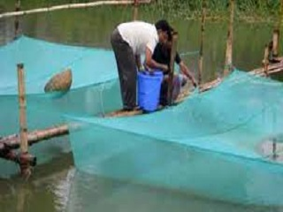

পুকুর ব্যবস্থাপনাঃ
পুকুর নির্বাচনঃ
লাভজনক মাছ চাষ করার ক্ষেত্রে পুকুর নির্বাচন অতি গুরুত্তপুর্ন । আপনি সঠিক স্থানে ভাল মানের পুকুর নির্বাচন করতে পারলে খুব সহজেই বড় বড় মাছ পেতে থাকবেন । আর এই জন্য একটি ভাল পুকুরের যে বৈশিষ্ট্য গুলো থাকতে হবে । তা হলোঃ
১। খোলা পরিবেশে পুকুর হতে হবে । যেখানে থাকবে পর্যাপ্ত আলো বাতাসের ব্যাবস্থা । আর রোদ যুক্ত পুকুরে খুব সহজেই ফাইটোপ্লাংটন তৈরি হয় যা মাছ বড় হতে সহায়তা করে ।
২। পুকুর পাড় হতে হবে উচু । যেন সহজেই বর্ষাকালে পানি বেরিয়ে যেতে না পারে ।
মাছ চাষে সমস্যা ও প্রতিকারঃ
মাছ চাষে সমস্যা ও প্রতিকার
পুকুরে মাছ চাষে বিভিন্ন সমস্যা দেখা যায়। পানি দূষিত হয়, অক্সিজেন কমে যায়, গ্যাস সৃষ্টি হওয়াসহ নানা সমস্যার জন্য মাছের বিভিন্ন রোগ ও মড়ক দেখা যায়। ফলে মাছের উৎপাদন কমে যায়। এসব সমস্যা হওয়ার আগেই প্রতিরোধ ব্যবস্থা নিলে মাছের উৎপাদন বাড়ানো যায়।
১. খাবি খাওয়া : অক্সিজেনের অভাবে মাছ পানিতে খাবি খায়। পানির ওপর ভেসে ওঠে। মাছকে খুব ক্লান্ত দেখায়। পানিতে সাঁতারকাটা, বাঁশ দিয়ে পানির ওপর পেটানো, হররা টেনে তলের গ্যাস বের করে দেয়া, পুকুরে পাম্প বসিয়ে ঢেউয়ের সৃষ্টি করা। নতুন পানি সরবরাহ করেও অক্সিজেন বাড়ানো যায়। প্রতি শতাংশে ১ কেজি চুন ও কৃত্রিম অক্সিজেন দেয়া যেতে পারে।
মাছ চাষের আধুনিক কৌশল
মাছ চাষের জন্য পুকুর প্রস্তুতি
১. পুকুরের পাড় ও তলা মেরামত করা; ২. পাড়ের ঝোপ জঙ্গল পরিষ্কার করা; ৩. জলজ আগাছা পরিষ্কার করা; ৪. রাক্ষুসে ও অবাঞ্ছিত মাছ দূর করা; ১. পুকুর শুকানো; ২. বার বার জাল টানা; ৩. ওষুধ প্রয়োগ- রোটেনন। পরিমাণ ২৫-৩০ গ্রাম/শতাংশ/ফুট। এর বিষক্রিয়ার মেয়াদ ৭-১০ দিন। প্রয়োগের সময় রোদ্রজ্জ্বল দিনে। ২. ফসটক্সিন/কুইফস/সেলফস ৩ গ্রাম/শতাংশ/ ফুট। মেয়াদ এবং সময় পূর্বের মতো; ৫. চুন প্রয়োগ: কারণ/কাজ/উপকারিতা সাধারণত ১ কেজি চুন/শতাংশ প্রয়োগ করতে যদি ঢ়ঐ এর মান ৭ এর আশেপাশে থাকে। বছরে সাধারণত ২ বার চুন প্রয়োগ করতে হয়। একবার পুকুর তৈরির সময়, দ্বিতীয় বার শীতের শুরুতে কার্র্তিক অগ্রহায়ণ মাসে।
চুন প্রয়োগের মাত্রা ও নিয়মঃ
চুন প্রয়োগের মাত্রা ও নিয়মঃ
পাড় মেরামতের পর প্রতি শতকে ১-১,৫ কেজি হারে চুন পানির সাথে মিছিয়ে ছিটিয়ে দিতে হবে । আর এই সময় একটা বিষয় লক্ষ রাখতে হবে চুন প্লাস্টিক পাত্রে না রেখে মাটির চাড়ি বা ড্রামে অথবা অন্য কোন পাত্রে রেখে তার উপর পানি ঢালে মিশাতে হবে । না হলে অসতর্কতা বসত চুনের বিক্রিয়ার ফুটন্ত পানি চোখে মুখে পড়ে সমস্যা হতে পারে ।
সাধারনত হালকা রোদ যুক্ত আবহাওয়ায় চুন প্রয়োগ করা উত্তম হবে ।
চুন অবশ্যই শিশুদের নাগালের বাইরে থাকতে হবে ।
মাছের খাবার সরবাহ করার করার ব্যাপারে বিবেচ্য বিষয়গুলোঃ
মাছের খাবার সরবাহ করার করার ব্যাপারে বিবেচ্য বিষয়গুলোঃ
• খাবার দিনে একবার না দিয়ে দুবারে দেয়া ভাল ।
• রোদের সময় ( কেবল ১০টা থেকে বিকাল ৫টা ) খাবার দেয়া আবশ্যক।
• পুকুরের গভীরতা এক মিটারের বেশি হলে ফিড ট্রে ব্যবহার করা উচিত ।
• সারা পুকুরে খাবার না দিয়ে কয়েকটি নির্দিষ্ট স্থানে খাবার দেয়া উত্তম ।
• নির্ধারিত সময়ে খাবার দিলে সে সময় মাছ নির্দিষ্ট স্থানে চলে আসে এবং সব মাছ খাদ্য পেতে পারে ।